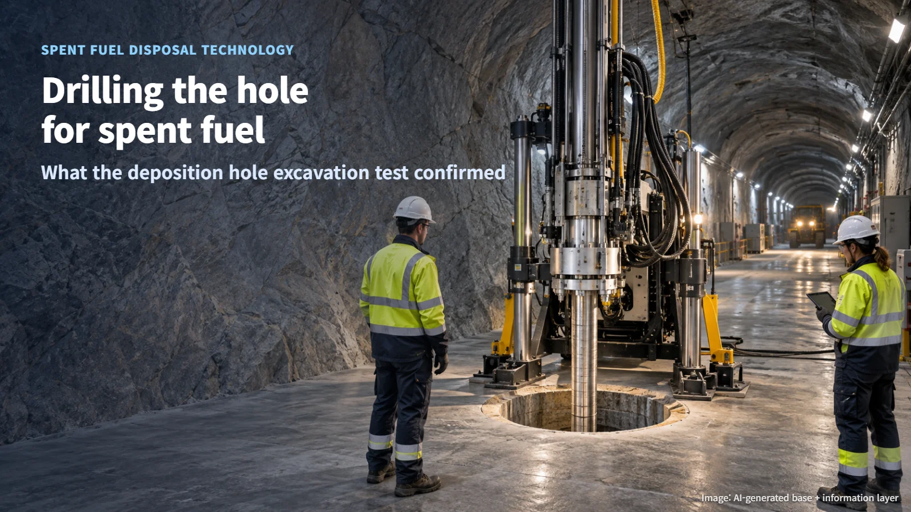
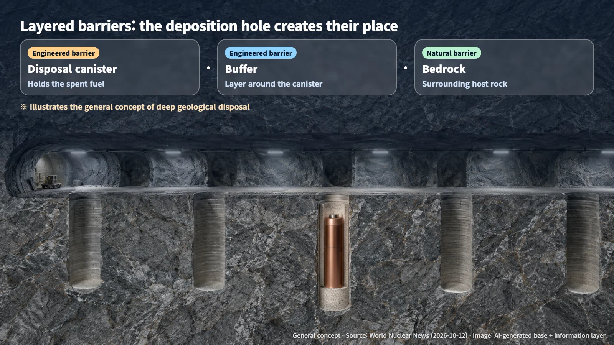
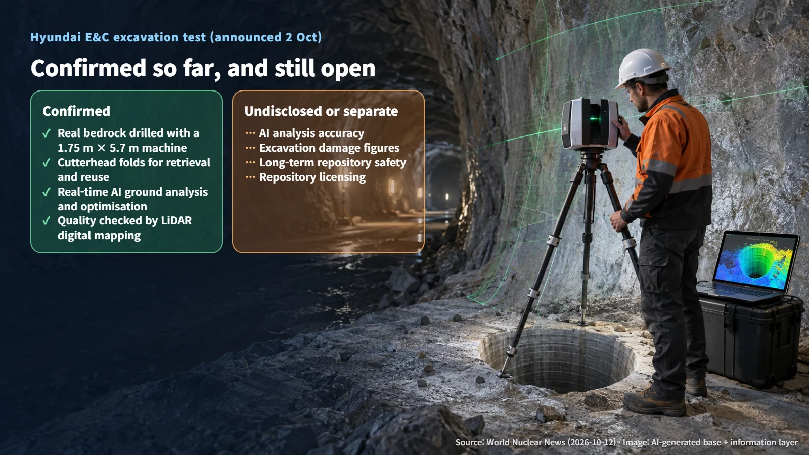

South Korea · Spent Fuel Disposal
Drilling the Hole for Spent Fuel: Hyundai E&C Tests Deposition Hole Excavation in Bedrock
Hyundai E&C has tested a folding-cutterhead machine that drills deposition holes for spent fuel canisters in real bedrock, using AI and LiDAR to guide and check the work.
Editorial responsibility: GlobalNuclearNews
When people hear that spent nuclear fuel will be placed deep underground, a practical question often follows: "How do you actually make the hole?" Boring a hole of a precise size into hard bedrock sounds like ordinary construction work, but in a disposal facility it is a technical challenge in its own right. In South Korea, the equipment designed to drill these holes has just been tested in real bedrock, and the results have been announced. Let's look at what the test confirmed and which questions are still open.

What a Deposition Hole Is: The Place in the Rock Where Spent Fuel Will Rest
Deep geological disposal is one of the most widely studied ways to manage spent fuel over the long term. The waste is placed in stable bedrock far below the surface, keeping it separated from the human environment for a very long time. Safety rests on several layers working together rather than on a single device. The basic idea is a multi-barrier concept: the disposal canister, the buffer material that surrounds the canister, and the surrounding bedrock each form a line of defence.
Within this system, a deposition hole is the space in the bedrock where a disposal canister is placed. Put simply, it is the "seat" that a canister filled with spent fuel will occupy. Picture a neat cylindrical hole cut into solid rock, with a canister standing inside it. When this seat is built exactly to design, the canister and the buffer can be installed as planned.

What the Test Confirmed: The Equipment and How It Excavates
On 2 October, Hyundai Engineering & Construction (Hyundai E&C) announced that it had completed a demonstration of its spent fuel deposition hole excavation equipment in bedrock at a research demonstration site, and World Nuclear News (WNN) reported the news on 12 October. The work is part of a national research programme on spent fuel management led by the Korea Radioactive Waste Agency (KORAD). Within this programme, Hyundai E&C is developing construction technologies for disposal facilities, including excavation equipment and methods as well as rock monitoring.
The machine measures 1.75 m in diameter and 5.7 m in length, dimensions chosen with the conditions of Korea's disposal system, KORADIS, in mind. Its retrieval method deserves attention. After excavation, the cutterhead (the rotating cutting unit that grinds away the rock) folds up so the machine can be pulled out and used again. Imagine a cutting unit deep inside a narrow hole closing like an umbrella and sliding back out. Whether the same machine can be retrieved and reused over and over ties directly to how practical construction will be.
What AI and LiDAR Did
Two digital technologies were used together in this test. The first is artificial intelligence (AI). During excavation, AI analysed the drilling data in real time to assess ground conditions, and the results were used to optimise the excavation. Rock conditions can change from one section to the next, so the drilling data served as a guide for adjusting how the work proceeded.
The second is LiDAR, a technology that measures the shape of objects in three dimensions by firing laser pulses and reading the reflected signals. Once excavation was finished, the deposition hole was digitally mapped with LiDAR to check construction quality. Picture a laser sweeping the inside of the finished hole and recording the shape of its walls as a 3D map.
One point is worth noting. The public announcement did not include detailed verification results on AI accuracy or on excavation damage figures. Excavation damage refers to changes such as cracks that can form in the surrounding rock during excavation. How accurately the AI read the ground conditions, and how much the rock around the hole was affected, remain to be shown in data that has not yet been released. The company said it is broadening its research to materials for controlling groundwater inflow, rock classification, and digital assessment and monitoring.

From a Well-Drilled Hole to a Safe Repository: The Questions Still Ahead
What this test demonstrated is the constructability of the equipment: deposition holes of a set size can be drilled in real bedrock, and the machine can be retrieved afterwards. The long-term safety and licensing of a full disposal facility are established through separate, broader work, and this demonstration of constructability is one input to that work.
Long-term safety is its own question: how the disposal canister, the buffer and the bedrock perform together over very long periods of time. Licensing, in turn, is the process in which the regulator reviews the entire facility and reaches a decision. As an analogy, the test confirmed the technique for digging the exact spot where a building's foundation will sit; certifying that the whole building will stand firm for a long time comes through later, wider reviews.
This result still carries real weight. The deposition hole is where the multi-barrier system begins, and a technology that builds that space precisely and in a verifiable way is one of the pieces needed to turn a disposal facility into reality. As test data on excavation precision, the extent of damage and the repeatability of equipment retrieval is published, the technology can be assessed more objectively.
Spent fuel disposal moves forward step by step, starting with something as concrete as the technology for drilling a single hole and verifying each piece along the way. Separating what has been confirmed from what remains is the best starting point for looking at this issue calmly.
Revision r002 · October 26, 2026. Source links expanded and editorial attribution added.